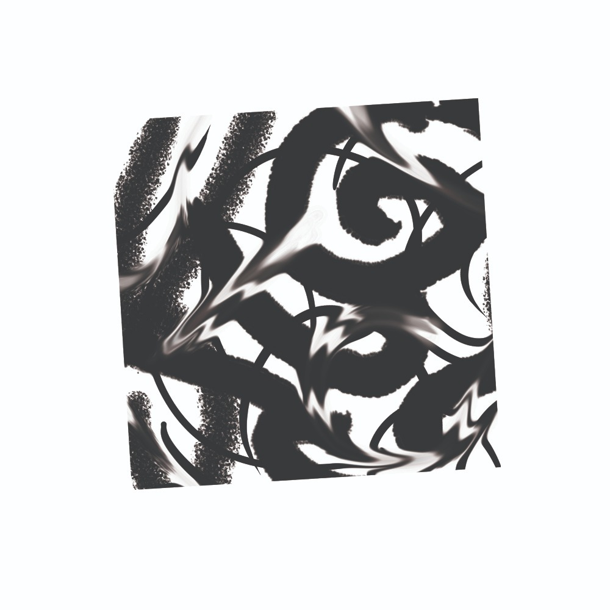

Aceitar, acostumar, resignar, transformar
27/02/2023
Se você quiser saber que noção ocupa o lugar de Deus para um escritor da tradição ontoteológica, sempre procure aquela que ele diz não existir. Esse será o nome do Inefável, daquilo que pode ser mostrado mas não dito, acreditado mas não conhecido, pressuposto mas não mencionado, aquilo em que vivemos e nos movemos e temos nosso ser. (Rorty CP 102)
Aceitar o incontrolável
Henderson (2021) nos sugere alguns conceitos a serem utilizados para abordar os objetivos da técnica psicanalítica. Suas ferramentas são os operadores “condição de desamparo” e “vida comum”. A primeira funciona via ética da desilusão, na qual o sujeito se reencontra com o desamparo fundamental da existência humana. A segunda funciona via ética da reconciliação, na qual se estabelece um novo laço, não mais ancorado em ilusões.
Por meio dessa dupla orientação, podemos evitar certos problemas relativos ao exercício de poder pela parte do analista. Desilusão e reconciliação andam juntas: desilusão sem reconciliação produz glorificação da tristeza; reconciliação sem desilusão produz um humanismo alienador. Por meio desses pesos e contrapesos, podemos tentar definir uma análise que evita as armadilhas tanto da alienação (a devoção à autoridade do analista) quanto da separação (o ideal neoliberal de liberdade total).
Com essas ferramentas, estamos equipados a tentar garantir os valores que orientam a clínica lacaniana: promover o reconhecimento e o respeito da singularidade do analisante, sem que ela seja invalidada ao tentar responder as exigências alheias (Henderson, 2021, p. 17). A “apropriação”, enquanto termo operativo, consiste em responsabilização sem culpabilidade, desamparo sem medo, liberdade sem autossuficiência, autonomia sem individualização, heteronomia sem alienação.
São objetivos admiráveis. Não creio, no entanto, que eles sejam alcançados. Minha questão não é com suas conclusões, mas com seus fundamentos. Espero demonstrar que o problema é criado herdar alguns traços (obrigatórios) da psicanálise: historicismo, correspondentismo, fundacionalismo. Como todo texto pertencente à discursividade lacaniana, ele se fundamenta em Freud e Lacan. Ao referir-se ao cânone psicanalítico, no entanto, esse projeto subverte sua própria meta.
No texto comparece uma tensão implícita referente ao problema do impossível. Busca-se uma vivência desejante e autêntica, mas sem ser delirante – sem tentar o impossível. Esse programa, portanto, precisa de uma forma legítima de separar aquilo que é apenas difícil e aquilo que é, de fato, impossível. É precisamente aí que mora o perigo.
Ao invés de pensarmos automaticamente em remediar o desamparo, ou buscarmos alguma estratégia desesperada para nos afastar dele, parece que Freud nos sugere que deveríamos aceitá-lo. Aceitar que, diante de certas contingências da vida, como a morte, a falibilidade do nosso corpo, das forças da natureza, existe o incontrolável. (Henderson, 2021, p. 160)
A apropriação trata de compor um “saber-fazer frente ao indomável” (Henderson, 2021, p. 139). Há um limite (a força implacável da natureza, a finitude do corpo, etc) e a arte de viver trata-se de como funcionar dentro desse limite, dentro daquilo que a natureza nos fornece como possibilidade. Assumindo que esses limites não são autoevidentes, quais são eles?
Freud (1927/2010) argumenta que a racionalidade científica é capaz de descobrir o mundo.O delírio é aquilo que não corresponde ao mundo. O mundo, a natureza, a realidade – esses são os limites intransponíveis, que o Homem nunca conseguirá domar completamente.
Algo semelhante comparece no texto lacaniano. Dependendo da sua leitura, o imutável seria ou o Simbólico, ou o Real. As estruturas da linguagem (e por conseguinte, o funcionamento do inconsciente) estão fora da capacidade de transformação humana. Alternativamente, temos o Real, seja ele “o real do corpo” ou “o real como impossível”. Eles são justamente isso: impossíveis, inapreensíveis, inalcançáveis, indomáveis.
Considero esse enquadramento inconveniente. Ele não é necessariamente incorreto; o que importa é que ele é incapaz de se justificar adequadamente.
Tomo como ponto de partida para a análise dos conceitos de ilusão, desamparo e reconciliação o livro O Futuro de Uma Ilusão (Freud, 1927/2010). Esses conceitos são intimamente associados com uma rede de significação que responde à ontoepistemologia psicanalítica: humano, natureza, cultura, religião, ilusão, realidade e ciência. Todos eles são interdependentes, produzindo uma visão de mundo.
Primeiro, um breve resumo do texto. Freud argumenta que a religião é um estágio inicial do desenvolvimento da civilização. A natureza humana é a dominação, e a cultura serve a seus dois tipos: dominação da natureza e dominação do semelhante. A religião faz parte da cultura, junto com a arte e a moral. A religião se faz necessária pois o ser humano é naturalmente cruel; é preciso que algum limite superior o impeça de exercer seus impulsos violentos. Ela recorre a ilusões pois o ser humano é débil; ele é convencido por emoções, não por racionalidade.
Da mesma forma que se superam as neuroses infantis, seria necessário superar a religião. Isso pode ser feito por meio da ciência. A ciência não é ilusória porque corresponde à realidade. Da mesma forma que a cultura tem como objetivo a dominação da natureza, a racionalidade tem como objetivo a dominação dos impulsos. Com isso, seria possível dominar a natureza humana e construir uma sociedade menos opressiva. Ou seja, passamos de um cenário pessimista a um cenário otimista por meio da dominação da natureza humana. Uma utopia científica, em que os saberes são verdadeiros e as ações são justas. Mas a ciência não é toda-poderosa; ao que restar, devemos apenas nos acostumar.
Para o leitor do século XXI, esse resumo não deve passar de uma fantasia distópica de um médico do século XIX. Na minha opinião, todos esses pontos comparecem, de forma transparente, no texto freudiano. Podemos discutir a parcialidade da minha leitura, mas essas pautas estão todas lá, de uma forma ou de outra. Por isso, se queremos utilizar os conceitos desse texto, temos que lidar com alguns problemas que se tornaram evidentes com o passar do século. O ser humano é naturalmente burro e cruel? O humano é separado da natureza? É possível alterar a natureza? O conhecimento corresponde à realidade? Como discordar sem acusar o outro de delírio? Como disputar sem recorrer a absolutos? Ações justas decorrem de conhecimentos verdadeiros?